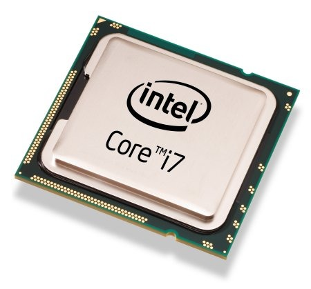

IL PROCESSORE
Il processore (CPU) è il componente che esegue i calcoli e le istruzioni.
Alloggia in un socket (detto zoccolo) della scheda madre. I processori moderni possono essere facilmente smontabili perchè sono bloccati tramite ZIF (Zero Insertion Force), mentre una volta erano saldati direttamente nella scheda madre.
Il raffreddamento del processore può essere attivo o passivo. È passivo con delle lamelle di alluminio che assorbono il calore, mentre è attivo quando sopra il socket viene montato un dissipatore.
Ogni processore può svolgere una sola operazione alla volta, più core (cioè la parte operativa del processore) lavorano in parallelo.
